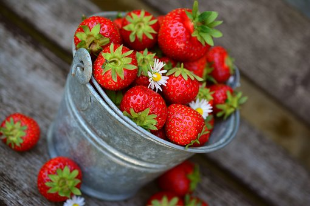
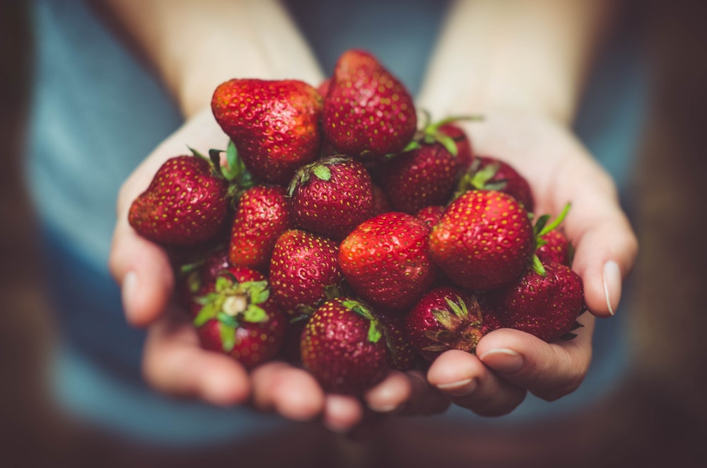

About Us
Store-bought berries can never compare to those you pick right off the vine. Strawberry Fields Forever is designed to make finding these juicy hand-picked delectables faster and easier. With the help of our page, no one has to feel like the only available and convenient strawberries are at the grocery store. Strawberry Fields Forever hopes to better local businesses and satisfy berry lovers one fresh berry at a time!
For more information feel free to contact us at strawberryfieldsforever@gmail.com.

The Owner
Strawbery Fields Forever was founded by Sophia Pegues, after a tramatic experience she had with store-bought strawberries. Sophia is a student at the University of Chicago, but dedicates her precious time trying to prevent others from experiencing the same thing she did. When asked what she sees the future of Strawberry Fields Forver as, Sophia replied:
"I hope to see it grow and eventually become a platform for all fruit lovers to use to find local produce. We might have to change the name though...but thats an issue for a later time. For now I would just be happy seeing more and more strawberry lovers using and appreciating this webiste."
We sure do love our owner, and we hope you do too. Feel free to show your appreciation for her mission by donating to Strawberry Fields Forever. If you have any questions about this process don't hesitate to email us at strawberryfieldsforever@gmail.com.
Our Services
We provide a quick search tool for you to find local fields. Just put in your address and we will locate the fields in a reasonable readius of you.
We provide the address, contact information, hours, as well as link to the website of each field registered on our website.
